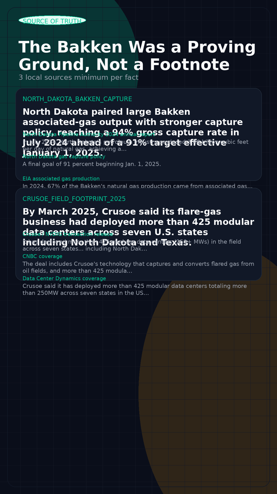
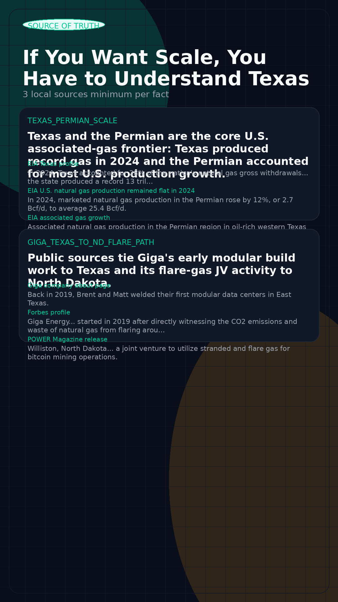

NRG Bloom Content Pipeline Review
Three review pieces built from the Codex content engine. Each section embeds the HTML animation for immediate browser review, plus the proof board, square visual, carousel brief, and video script so you can judge both creativity and source discipline.
Proof Before Promises
This piece is designed to establish operator legitimacy fast. It uses dated site proof to challenge generic commentary and position NRG Bloom as a company that has earned the right to speak.
Square Review Still

Source-of-Truth Board


The Bakken Was a Proving Ground, Not a Footnote
This piece makes NRG Bloom sound category-literate. It links North Dakota's gas-capture pressure to the real industrial conditions where flare-to-compute models had to prove themselves.
Square Review Still

Source-of-Truth Board


If You Want Scale, You Have to Understand Texas
This piece is built for fast retention. It uses Texas and the Permian as the scale benchmark, then pivots to the claim that African execution requires a different operating muscle.
Square Review Still

Source-of-Truth Board
